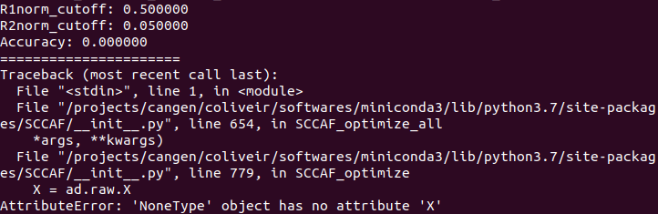

Stop your analysis until you read this clustering secret
 Image credit: https://doi.org/10.1038/s41592-020-0825-9
Image credit: https://doi.org/10.1038/s41592-020-0825-9
{kind=link}
I had been analyzing the data for a while with my friend Cleidson and we always asked ourselves, how to determine the optimal number of clusters for our data? I think this is one of the main questions when working with single-cell data. Although some better known tools like Seurat (R) and Scanpy (Python) have different methods of clustering, they do not return the optimal number of clusters. What I had been doing previously was generating different resolutions with the data and checking with the clustree package in R how the clusters were split from the smallest to the maximum resolution that I had predetermined.
I was generating something like this:
data <- FindClusters(data, resolution = seq(0, 1, 0.1))
clustree(data)
 Fig. 1: clustree visualization.
Fig. 1: clustree visualization.
The approach was basically to look at the graph above and identify the resolution where there were not many changes in the numbers of clusters. It is not the best alternative by far, but it was an attempt.
Until following on Twitter I saw a paper that came out on May 18th, and I found the methodology and results very interesting. The paper included the SCCAF tool(installation instructions) which, in simple words, assumes that you pass as input each cluster being theoretically a cell type, and from the implementation of SCCAF (which includes a good part of machine learning) will return what is the combination of clusters (or cell types) that have better accuracy. Are you confused yet? I’ll show you an example below.
The tool was made entirely in Python, and I had my data all run using Seurat, in R. Initially I thought that a simple conversion of the seurat object to a loom file would be enough, but I had the following problem when putting SCCAF to run:
import warnings
warnings.filterwarnings("ignore")
from SCCAF import *
ad = sc.read(filename="/projects/biagi/data.loom")
ad.obs['L1_Round0'] = ad.obs['clusters']
SCCAF_optimize_all(min_acc=0.953, ad=ad, basis ='tsne', c_iter=5)
 Fig. 2: SCCAF error message.
I realized that the way that Seurat generates the loom file was not the default way for the AnnData object that will be read inside python. To work around this problem, I tested numerous alternatives, but none worked. Then I remembered that in version 2 of Seurat there was a function that converted the seurat object to a h5ad file. So I took the source function of version 2 as a base and went on adapting and modifying it until I had a function that converts the seurat object to an h5ad file, which is exactly what we need to give as input to SCCAF.
SeuratToH5ad <- function(seurat_object, filename, assay = NULL, res = 1) {
library(reticulate)
if (!py_module_available("anndata") | !py_module_available("scanpy") | !py_module_available("igraph") | !py_module_available("louvain")) {
stop("Please install the anndata python module")
}
ad <- import("anndata")
sc <- import("scanpy")
message(paste("Starting to fix the mess..."))
raw <- seurat_object@assays$RNA@data
if (assay == "RNA") {
X <- seurat_object@assays$RNA@scale.data
} else if (assay == "SCT") {
X <- seurat_object@assays$SCT@scale.data
} else {
stop("Please select an existent assay")
}
cell_names <- colnames(x = X)
gene_names <- rownames(x = X)
raw <- as(object = raw, Class = "dgCMatrix")
scipy <- import(module = 'scipy.sparse', convert = FALSE)
sp_sparse_csc <- scipy$csc_matrix
raw.rownames <- rownames(x = raw)
raw <- sp_sparse_csc(
tuple(np_array(raw@x), np_array(raw@i), np_array(raw@p)),
shape = tuple(raw@Dim[1], raw@Dim[2])
)
raw <- raw$T
raw <- dict(X = raw, var = dict(var_names = raw.rownames))
X <- np_array(t(x = X))
obsm <- list()
for (dr in names(seurat_object@reductions)) {
obsm[[paste0("X_",dr)]] <- np_array(Embeddings(
object = seurat_object,
reduction = dr
))
}
obsm <- dict(obsm)
meta_data <- seurat_object@meta.data
if ("nCount_RNA" %in% colnames(x = meta_data)) {
colnames(x = meta_data) <- gsub(
pattern = "nCount_RNA",
replacement = "n_counts",
x = colnames(x = meta_data)
)
}
if ("nFeature_RNA" %in% colnames(x = meta_data)) {
colnames(x = meta_data) <- gsub(
pattern = "nFeature_RNA",
replacement = "n_genes",
x = colnames(x = meta_data)
)
}
colnames(x = meta_data) <- gsub(
pattern = "\\.",
replacement = "_",
x = colnames(x = meta_data)
)
anndata.object <- ad$AnnData(
raw = raw,
X = X,
obs = meta_data,
obsm = obsm
)
anndata.object$var_names <- gene_names
anndata.object$obs_names <- cell_names
message(paste("Clustering for resolution:", res))
sc$pp$neighbors(anndata.object)
sc$tl$louvain(anndata.object, resolution=res, key_added = paste0("res", res))
message(paste("Writing to h5ad file..."))
anndata.object$write(filename)
message(paste("Finished!!"))
}
Let’s explain in more detail the function parameters:
- seurat_object: a seurat object with the basic steps already run (NormalizeData, FindVariableFeatures, ScaleData, RunPCA, FindNeighbors, FindClusters and RunUMAP/RunTSNE);
- filename: path with file name (i.e. /path/to/output/file.h5ad);
- assay: choose between RNA or SCT;
- res: resolution for clustering if clustering has not yet been done.
So, in the end the function will bem implemented this way:
SeuratToH5ad(seurat_object = data,
filename = "/path/to/output//data.h5ad",
assay = "RNA",
res = 1)
Some important details: for the function to work it is necessary to have the reticulate package installed. In addition to it, it is necessary to install the anndata, scanpy, pandas, louvain modules in the r-reticulate environment that the Seurat package itself creates automatically.
To install these modules, simply identify the full name of the r-reticulate environment:
# list all available conda environments
conda env list
# in my case
conda activate /home/biagi/.local/share/r-miniconda/envs/r-reticulate
# installing each module manually
conda install -c bioconda anndata
conda install -c bioconda scanpy
conda install -c anaconda pandas
conda install -c conda-forge louvain
# deactivate r-reticulate env
conda deactivate
The next steps, from the generated h5ad file, can be followed through the tutorial available on the tool’s GitHub.
I ran for a dataset with approximately 70,000 cells and the complete SCCAF analysis took almost 2 hours. Consider that I am using the Cologne High Efficiency Operating Platform for Science (CHEOPS).
I strongly recommend reading the original paper before using the tool to better understand the methods. As I said at the beginning, I used it in my data and the results were very satisfactory and I included it in the default pipeline of my analyzes.
I hope it may have helped you to understand a little this whole process, and mainly that with this function it may have facilitated the use of the SCCAF tool. Any questions, comments, suggestions, criticisms, etc., feel free!